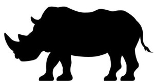

クロサイからの依頼 その1 v1.1

あなた の め の まえ に は いっぴき の どうどう と した クロサイ が、しずか に たたずんで います。
----クロサイ って いう けど、まっくろ では ないん です ね。りっぱ な つの。なかなか つよそう です ね。
すると あなた の こころ に だれ か が はなしかけて きました。
「わたしたち は、ぜつめつ の きき に ひんして います。どうか たすけて ください。」
----だれ？ ぜつめつ？ たすけて ほしい？
いつも、どうぶつえん に くる と、どうぶつたち に はなしかけられて いる よう な き が する あなた は、それほど おどろきません でした。
----ぜつめつ だ とか たすけて とか、おだやか じゃ ない です ね。クロサイ が ぜつめつ すると、なにか たいへん な こと でも おきる って いう の です か？
あなた が、クロサイ に め を むける と、ちょうど じかん に なった の か、しょくじ を し基本はじめました。
----おやおや、たすけ を もとめて いた の では なかった の です か。
むしゃむしゃ たべて いる の を みて いて、あなた は ある こと に きづきました。
【もんだい】
クロサイ の しょくじ ほうほう について、ただしい の は どれ でしょう。
1 じめん の くさ を すいとる よう に たべて いる
2 き を なぎたおして たかい は を たべて いる
3 じょうしん を きよう に うごかして えだ を パチンパチン と きる よう に たべて いる
あなたの目の前には1匹の堂々としたクロサイが、静かにたたずんでいます。
----クロサイっていうけど、真っ黒ではないんですね。立派な角。なかなか強そうですね。
するとあなたの心に誰かが話しかけてきました。
「私たちは、絶滅の危機に瀕しています。どうか助けてください。」
----誰？ 絶滅？ 助けて欲しい？
いつも、動物園にくると、動物たちに話しかけられているような気がするあなたは、それほど驚きませんでした。
----絶滅だとか助けてとか、穏やかじゃないですね。クロサイが絶滅すると、なにか大変なことでも起きるっていうのですか？
あなたが、クロサイに目を向けると、ちょうど時間になったのか、食事をし始めました。
----おやおや、助けを求めていたのであるのではなかったのですか。
むしゃむしゃ食べているのを見ていて、あなたはあることにきづきました。
【問題】
クロサイの食事方法について、正しいのはどれでしょう。
あなた は、クロサイ は うわくちびる が キュッ と とがって いる こと に きづきました。----たしか シロサイ は しかくかった です ね。
クロサイ の とがった うわくちびる は、にんげん の ゆびさき や ハサミ の よう に きよう に うごいて いました。
----なるほど、これ を つかって、クロサイ は 「き の えだ」 や 「ひくい き の は」 を、パチンパチン と せんてい する よう に きよう に ちぎって たべてる の です ね。
たしか、くち が しかくくて たいら な シロサイ は、そうじき の よう に じめん の くさ を まとめて すいとる よう に たべて ました。クロサイ は、き を パチパチ きる たんとう なん です ね。
もり の うえきや さん、 と いった ところ です か。うえきや さん？
ふと、あなた の あたま に ぎもん が うかびました。